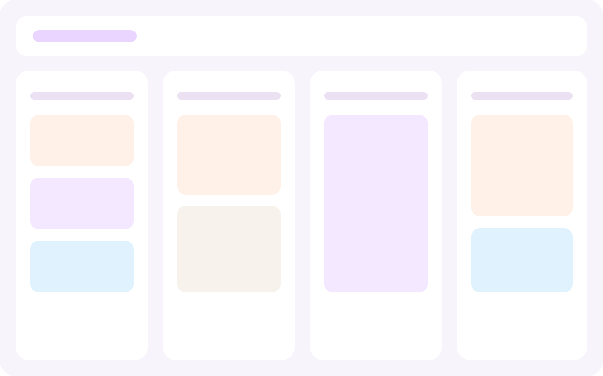
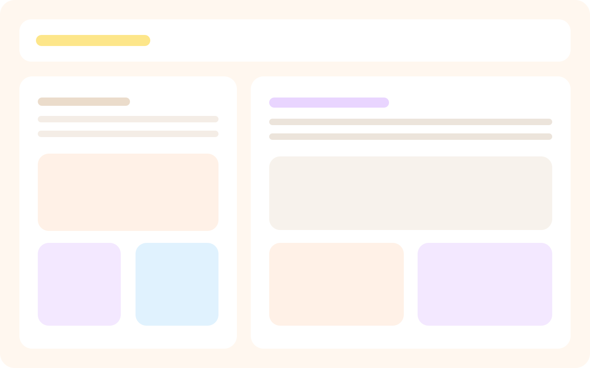

Showcase Detail
Ops Pilot
進捗、担当、確認漏れを一画面で把握できる業務進行ダッシュボード。
現場で散らばりやすい進捗情報をまとめ、更新確認や引き継ぎの手間を減らすための運用アプリです。

Overview
このアプリで解決したいこと
Problem
担当者ごとに管理方法がばらつき、どの案件が止まっているのか見えにくい状態を解消したい。
Audience
小規模チーム、制作進行、バックオフィス、社内オペレーション担当。
Outcome
案件の状態と次アクションを一目で把握でき、確認漏れや認識ずれを減らせます。
Highlights
見せたい価値と技術の要点
- 担当と期限の見える化
- 確認漏れを減らす一覧設計
- 更新状況を追いやすいダッシュボード
Workflow Design
Internal Tool
Status Tracking
Responsive UI
Use Cases
使われる場面
案件進行の可視化
案件ごとの状況とボトルネックを一覧で把握して、停滞を防ぎます。
引き継ぎの簡素化
担当変更時でも、次のアクションと履歴をすぐ確認できる構造です。
週次レビューの短縮
会議前に必要な情報が揃っているため、共有より判断に時間を使えます。
Gallery
画面とビジュアル


Discuss
Ops Pilot の方向性で相談する
近いテーマの新規アプリ、既存サービス改善、デモ制作の相談を受け付けています。要件が固まり切っていなくても、課題の輪郭があれば整理できます。